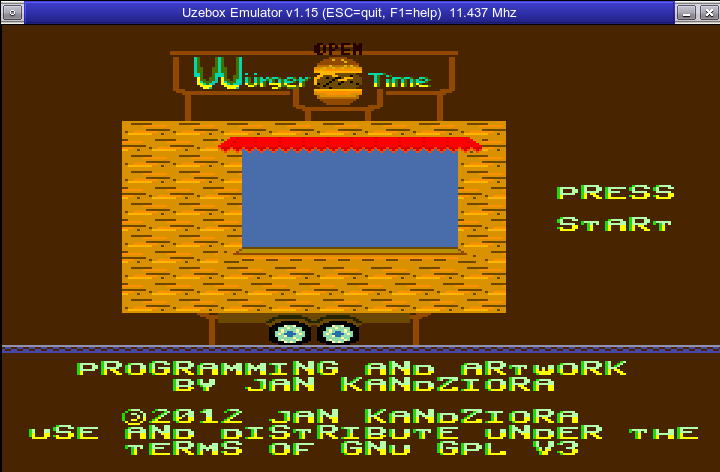
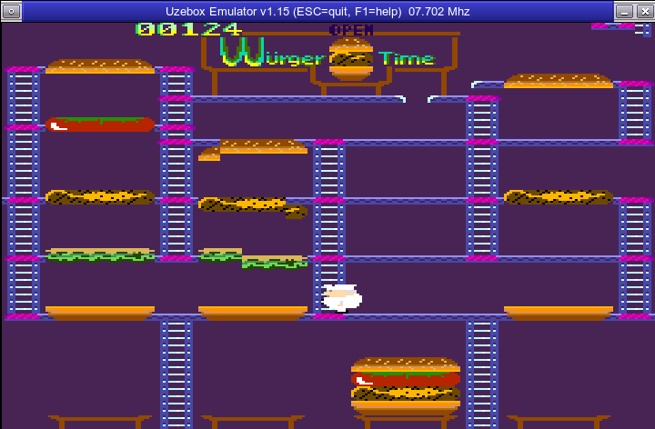

Although this project is a work-in-progress, you can already play the game. The cook can run through the ladder and platforms maze, burger components are falling when the cook stomped them completely, and the falling chain reaction is working, too. There are three different enemies with different AI on screen and if they catch you, the cook dies and it all starts over. Try to hit the enemies with burger parts before they get you!
I will update this page only every month or so. Please look at the sources or the discussion thread at the Uzebox forum for up-to-date information on development progress.